Homespace
Документ схематически описывает процесс эволюции. Документ рабочий, требует доработки.
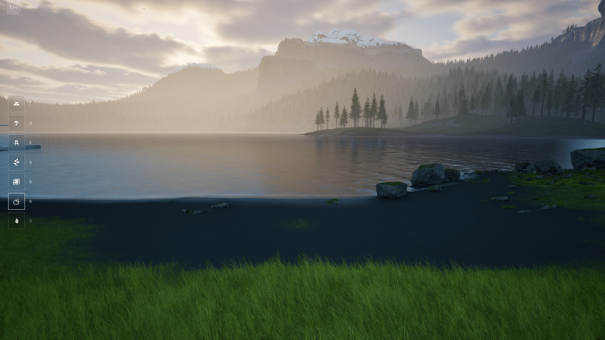
Озеро
В каждом водоёме Homespace свои зоны для рыбы. Зона задаёт, с какой вероятностью какая рыба попадётся, и в одной зоне ловятся разные виды.
Например, в зоне Кометы шанс поймать Комету 70%, рыбу из ближайшей соседней зоны 25%, а из зоны через одну 5%.
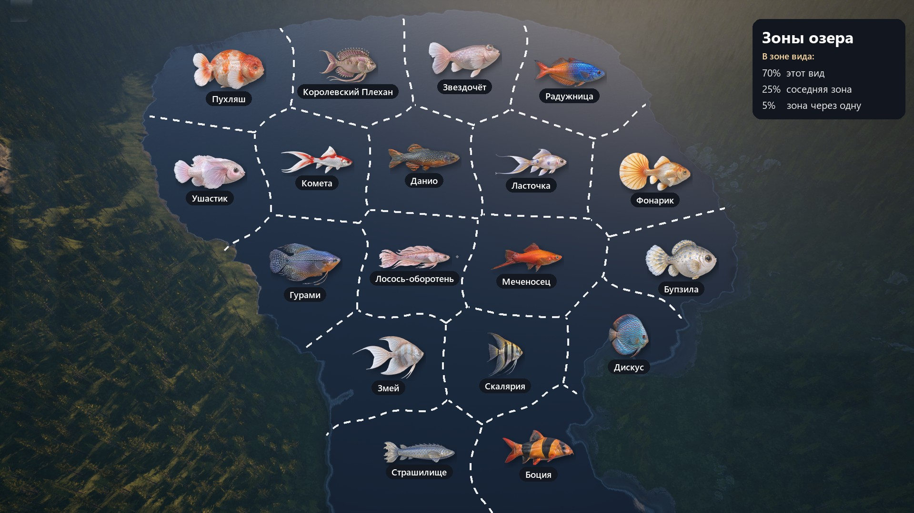
Карт сейчас три, и на каждой водятся все 18 видов, каждый в своей зоне.
Даже внутри одного вида рыбы разные. С первого улова видно, что окрас может меняться.
| Улов | Доля | Какая рыба |
|---|---|---|
| Обычная | около 70% | однотонная, один из природных цветов вида |
| Двухцветная | около 20% | голова и хвост разных цветов, тёмная спина и светлое брюхо |
| Узорная | около 9% | точки или полосы |
| Редкая | около 1% | мрамор или другой необычный узор |
Приманок и прикормки нет. Homespace строительная игра, без крафта и гринда, поэтому рыбалка простая. Выбрал место и закинул.
Шаг 1
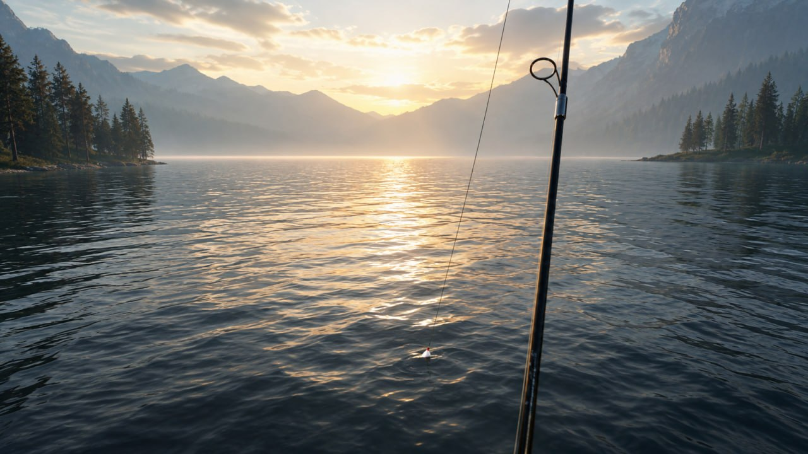
Мы поймали красивенькую Комету. Такую и в жизни хочется. Её надо снять с крючка, взять в руку и положить в ведро с заранее набранной водой, а потом отнести домой в аквариум.
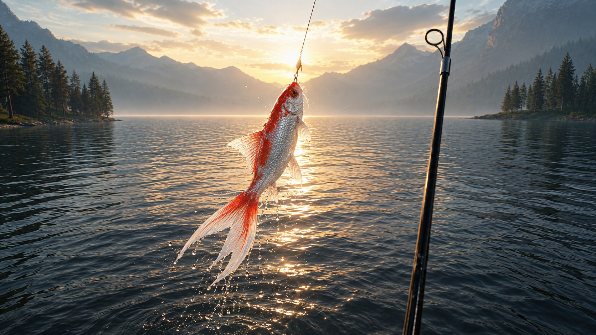
Когда рыба тянет, ты отпускаешь леску, а когда ослабла, тянешь. Сорваться она может, только если сильно ошибиться, и это видно заранее, потому что удочка сильно гнётся и леска звенит. Сила борьбы зависит от темперамента рыбы. Одна бьётся всерьёз, другая сдаётся почти сразу.
В ведро помещается до 5 рыб. Ненужную рыбу можно отпустить, и она уплывает и растворяется. Рыбу в Homespace не едят.
Шаг 2
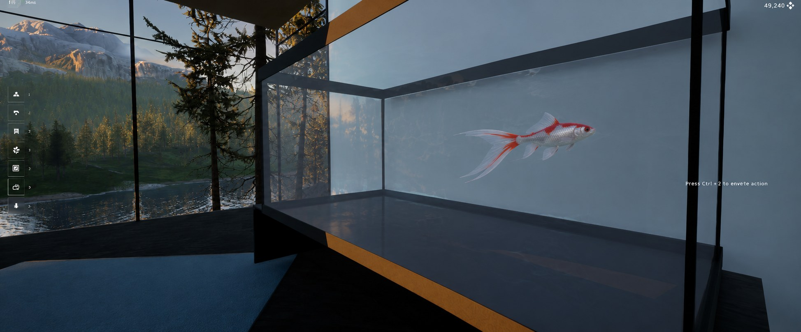
Смотрите, как красиво! Будет служить нам верой и правдой.
Рыб можно держать в большом аквариуме, можно сделать маленький, а можно поселить в уютном декоративном прудике за домом.
В одном аквариуме помещается до 12 рыб. Копать в игре нельзя, поэтому пруд делается приподнятым. Бортик стоит на земле, а вода выше её уровня, как в японских прудах с карпами кои.
Рыба не стареет и не умирает. Вернулся в свой Homespace, и все на месте.
Шаг 3
Чтобы получить потомство, нужна вторая рыба того же вида. Да и бедной Комете одиноко будет в аквариуме одной. Идём за второй рыбой.
Только теперь хочется порыбачить в другом месте.
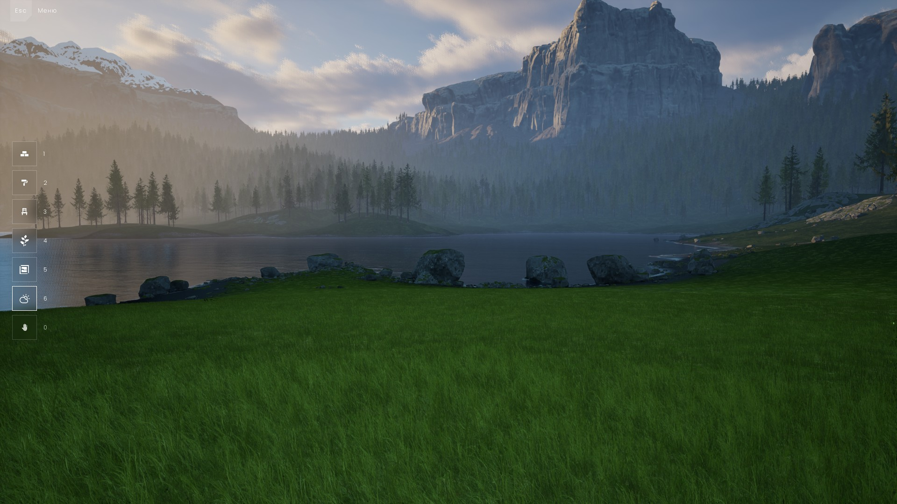
Это не Комета. Ну ладно, попробуем ещё раз.
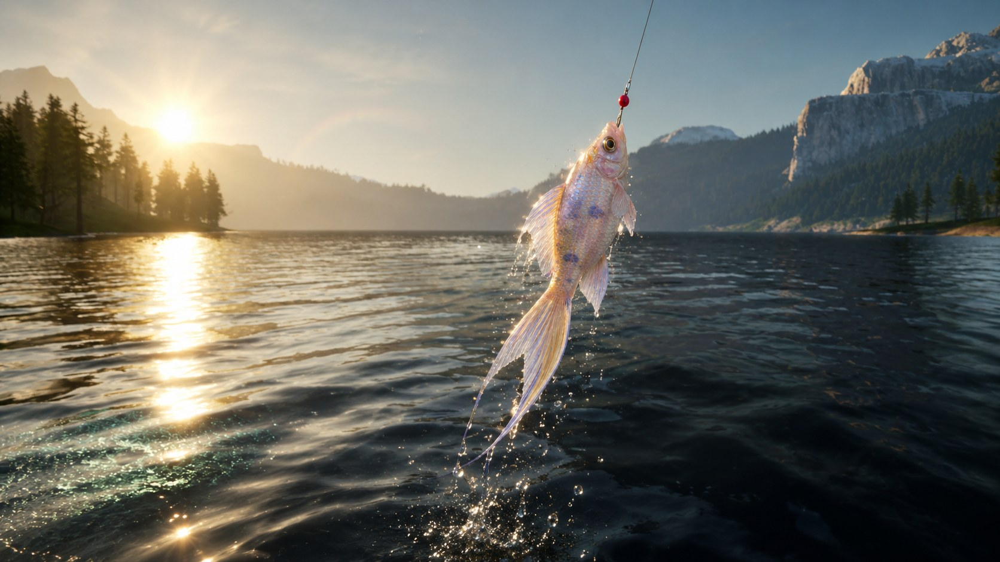
Опять та же рыба, только другого цвета. Ладно, ещё одна попытка.
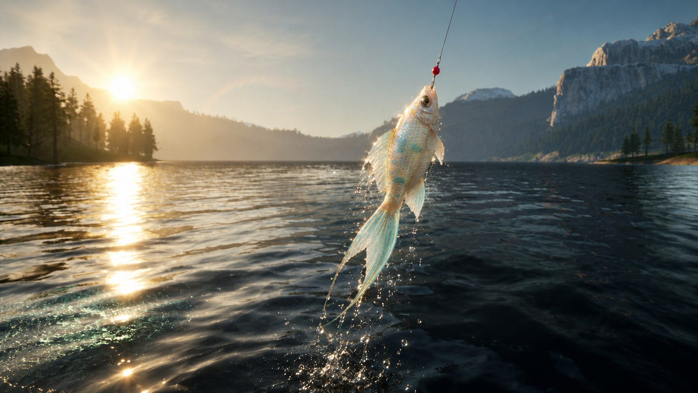
Похоже, в озере есть какое-то зонирование. Так игрок опытным путём понимает, что в разных местах водится разная рыба.
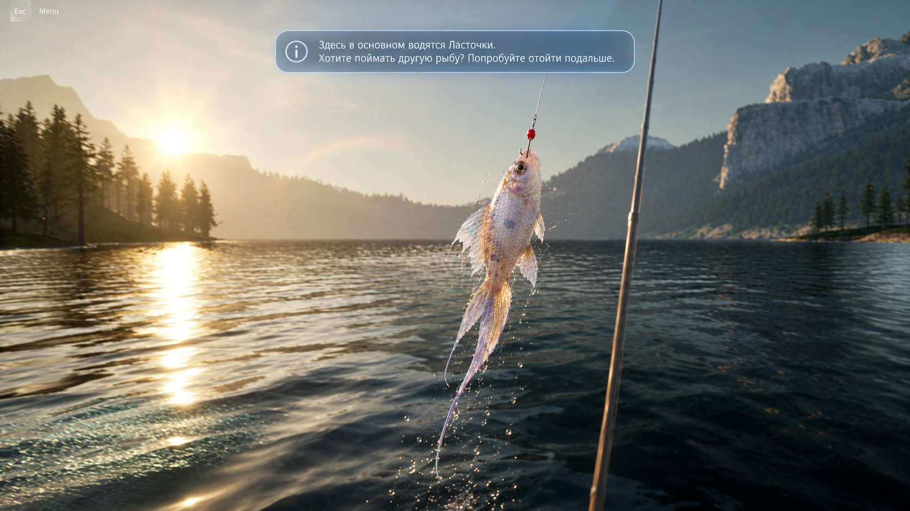
Пришла пора забросить удочку.
Да, это хорошо. Теперь мы поняли, как работает зонирование озера в игре. Время отнести её домой.
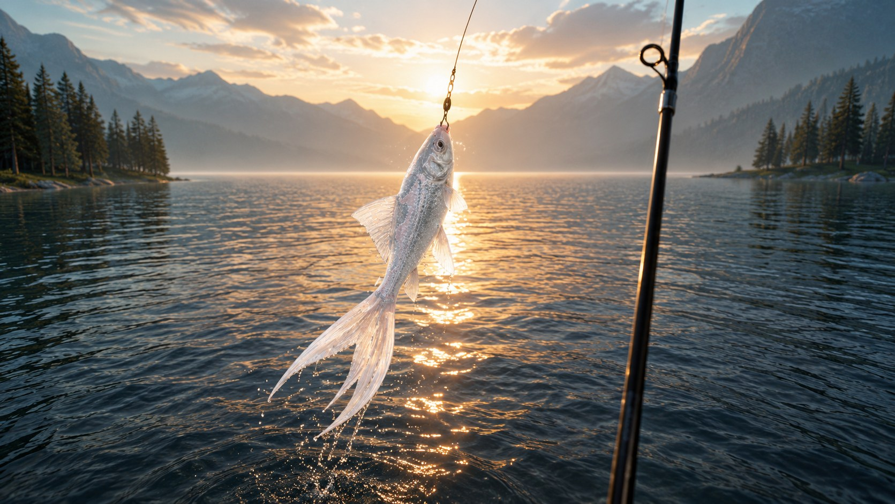
Шаг 4
Несём серебряную домой и выпускаем к красной. Теперь у нас пара, и можно начинать скрещивание.
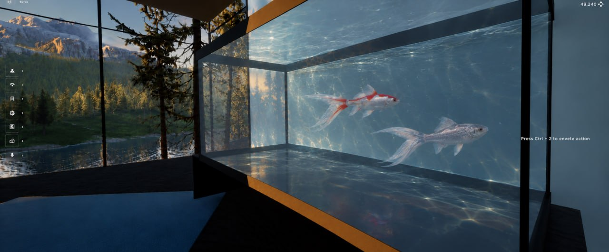
Дальше самое интересное
Рыбалка в Homespace нужна ради селекции. Каждая рыба несёт в себе геном, и от двух родителей рождается малёк, который берёт от обоих и иногда получает что-то совсем новое.
Анатомия
У каждой рыбы около 40 генов. Каждый ген работает как ползунок. Хвост чуть длиннее или короче, шапка от гладкого лба до пышной. Заранее нарисованных вариантов нет, игра собирает рыбу из генов на лету, поэтому почти каждая рыба уникальна.
Длина, ширина веера, глубина выреза и форма (обычный, двойной или вуаль). Самый заметный признак Кометы.
Длинные тонкие продолжения лучей хвоста и плавников.
Ровный, волнистый или бахрома, как кружево. Плюс прозрачность от плотных до стеклянных.
Толщина перехода от тела к хвосту.
Высота и длина вдоль спины, вплоть до нуля, как у породы «львиная голова».
Рост, полнота, вытянутость, горб за головой, брюшко.
Длина нижнего плавника у хвоста.
Размер пары маленьких плавников под брюхом, симметрично.
Размер пары у головы. Селекцией можно дойти до плавников больше головы.
Насколько выпуклые крышки жабр.
Нарост на голове, как у породы «оранда». Начинается с бугорка и растёт за 5 или 6 поколений.
Размер, глаза-телескопы, глаза вверх, пузыри под глазами.
Профиль от тупой до острой, губы, помпоны у ноздрей.
Блеск от матовой до металлика, жемчужная чешуя, размер чешуек.
Цвета, которых нет в природе (голубой, фиолетовый, золото, свечение), появляются только селекцией.
Генератор
Каждая деталь Кометы меняется плавно, от минимума до максимума. Размер плавников задают кости. Горб, жабры, глаза и шапку задают морфы, это крайние формы, заранее вылепленные в Blender, и ген смешивает их с обычной формой. Окрас и узор рисует материал. Поэтому одинаковых рыб почти не бывает.
Чтобы это было видно, мы собрали генератор Кометы. Это та же модель, что в игре, и рядом ползунки генов. Двигаешь ползунок, и рыба меняется на глазах. Кнопка «Случайный малёк» каждый раз собирает новую рыбу.
Если генератор выше не загрузился (на телефоне или в мессенджере), ниже снимки из него.
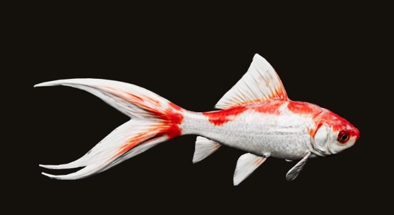
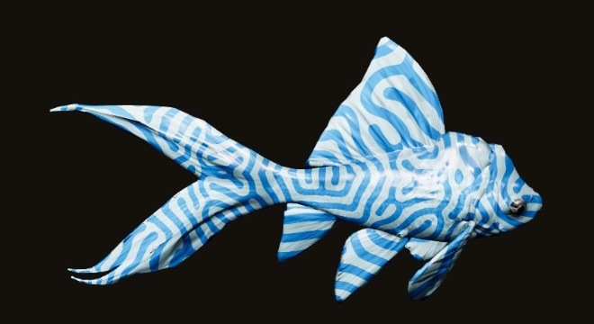
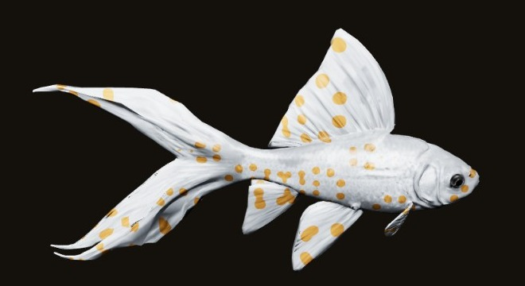
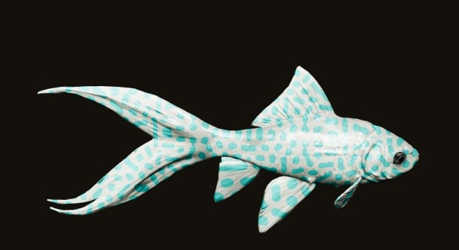
Слева сверху исходная Комета, справа «Лазурь», внизу два случайных малька. Генератор открывается отдельной страницей, его можно покрутить самому. Версия грубая, модель ещё не облегчена, и морфов пока четыре.
В игре малёк берёт гены от мамы и папы, а случай только немного сдвигает их, изредка сильно.
Скрещивание
Скрещиваются рыбы одного вида. Пару сажаешь в маленький аквариум для разведения. Пока ты этого не сделал, рыбы просто живут и не размножаются. Эволюцию запускает только игрок.
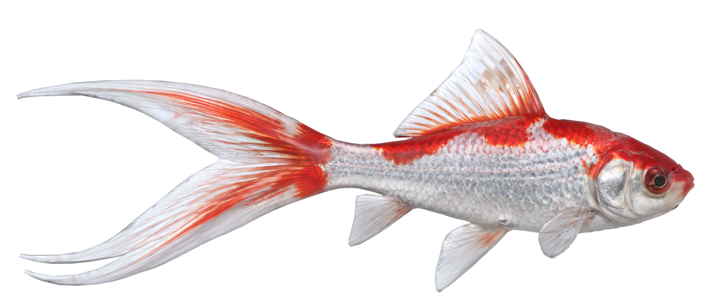
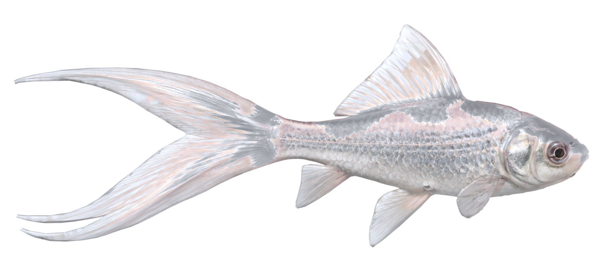
От пары рождается один или два малька. Каждый из 40 генов малёк получает от обоих родителей. Значение ложится между мамой и папой, случайно ближе к одной или к другому. Например, у мамы хвост 9 из 10, у папы 6, тогда у малька будет от 6 до 9, чаще всего около 7 или 8. Поверх этого иногда срабатывают мутации.
| Что происходит | Шанс на малька | Как выглядит |
|---|---|---|
| Обычное наследование | всегда | каждый ген между мамой и папой, разброс около 5% |
| Закрепление | 30% | если черта сильна у обоих родителей, у малька она ещё сильнее |
| Заметный сдвиг | 25% | один ген меняется на 15%, например хвост длиннее или цвет темнее |
| Скачок | 3% | новый цвет или узор, которого не было ни у мамы, ни у папы |
| Сверхредкое | 0,5% | признак, которого нет в природе |
| Скрытый признак | 1 из 4, если он есть у обоих | спрятанный признак проявляется у потомства |
| Гарантия | после 50 мальков без скачка | следующий скачок гарантирован, чтобы не было полосы невезения |
Скрытый признак серебряной Кометы может проявиться у мальков, и тогда цвет начинает уходить туда, где его раньше не было. Так и начинается история из мультика ниже.
У диких Комет лоб гладкий, шапку в озере не поймать. Однажды при нересте выпадает скачок, и у малька на лбу маленький бугорок, в паспорте «шапка 1 из 10». Эту рыбу бережёшь и скрещиваешь с хорошими Кометами, и бугорок передаётся примерно половине мальков. Дальше скрещиваешь рыб с бугорком между собой, срабатывает закрепление, и шапка растёт от поколения к поколению. В третьем поколении она 3 или 4 из 10, в пятом и шестом 7 или 8 из 10, пышная, как у породы «оранда». Это примерно 5 или 6 сессий.
Малёк появляется сразу после нереста. Его геном задан при рождении, а рост постепенно его раскрывает. Сначала прозрачный малёк, потом цвет, пятна, плавники и, наконец, взрослая рыба. Каждая стадия примерно 30 минут, взрослой Комета становится часа через три. Малёк растёт, даже когда игра выключена. Вечером посадил пару, утром смотришь, что получилось. Паспорт открывается, только когда рыба выросла, поэтому до конца интересно, какой она станет.
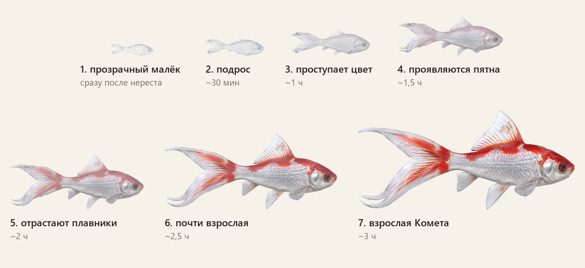
Пошёл процесс скрещивания
Здесь 30 поколений Кометы сжаты в 30 секунд. Узор растёт сам, как у живых рыб. Пятна делятся, расползаются и срастаются в лабиринт, а цвет плавно течёт от хвоста к голове. Меняется и цвет самой рыбы, от серебряной через розовую, кремовую и мятную до светло-голубой. Справа видно, какие гены меняются.
Если видео не играет, откройте гифку.
Паспорт рыбы
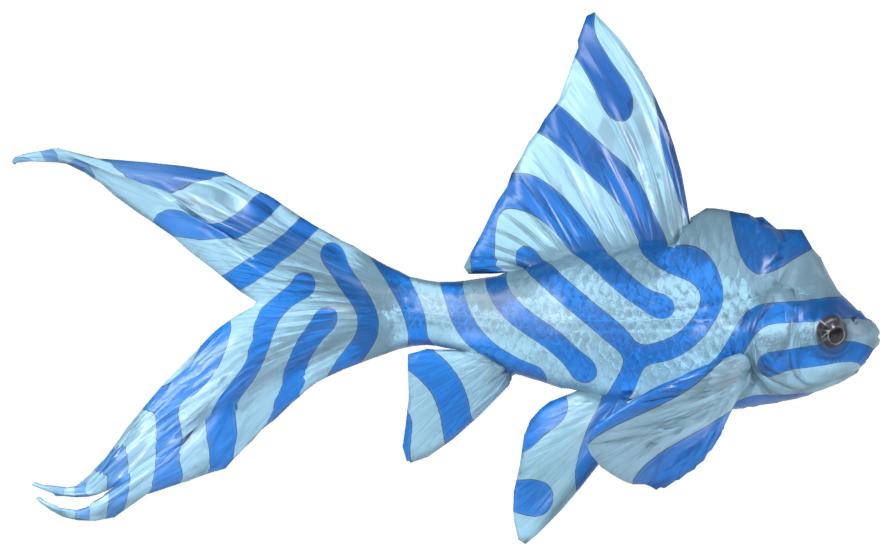
Лазурь
Комета · поколение 30 · выведена 26.10.2026
Голубая Комета с лабиринтом и шапкой на лбу. Такое сочетание выпадает примерно один раз на 2,4 миллиона мальков. Одна из самых редких Комет в мире.
Рыбе игрок сам даёт имя. Когда сидишь и думаешь, как её назвать, сильнее к ней привязываешься.
В аквариуме узор нарисован попроще, чтобы игра не тормозила. В паспорте та же рыба показана портретом в высокой чёткости, в студийном свете, её можно покрутить.
Число редкости честное. Каждый скачок, который случился с рыбой за её родословную, имеет свой шанс, и их произведение даёт «1 на N». Подкрутить его нельзя, поэтому коллекционеры за ним и гоняются.
Паспорт появляется, когда рыба выросла. В нём все её гены словами, сильные и слабые стороны, родословная и редкость.
Паспорт доказывает, что рыба твоя. Его можно поставить на полку, чтобы каждый, кто зайдёт в твой Homespace, видел, какую редкую рыбу ты вывел.
В будущем паспорт можно будет продать на торговой площадке. Вместе с паспортом продаётся и сама рыба, она переезжает в аквариум другого игрока.
План
Начинаем с одной Кометы. В первую версию входит вот что.
Приложение для команды